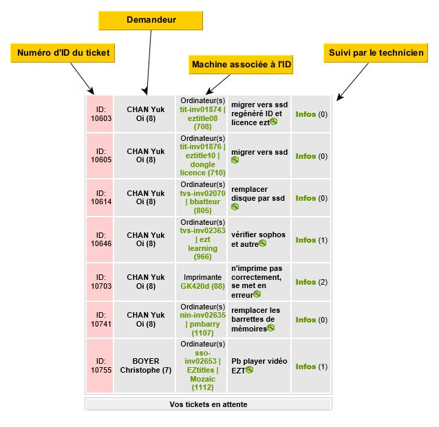
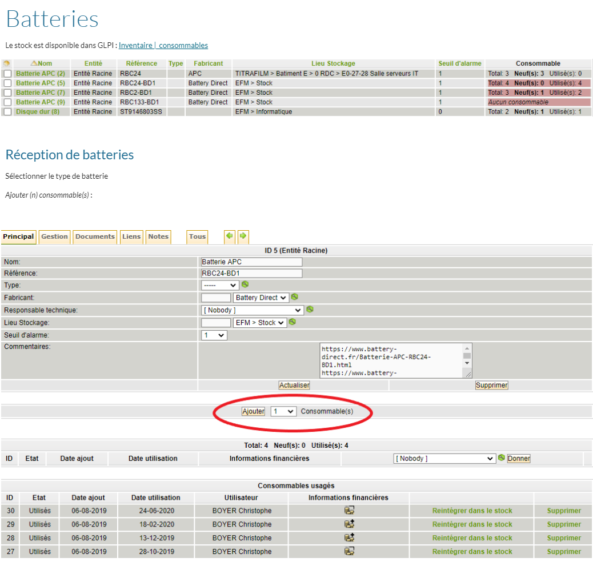
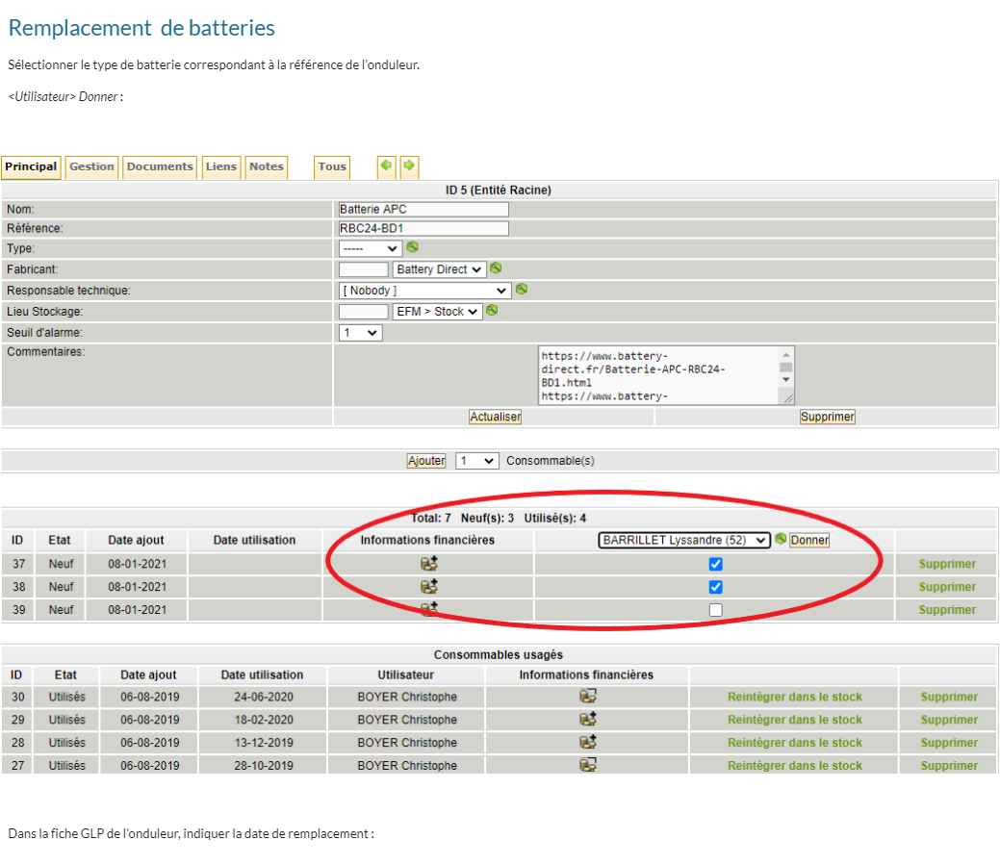
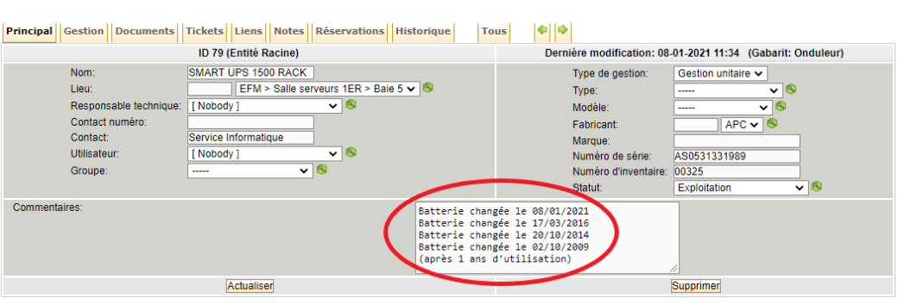
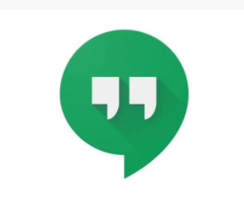
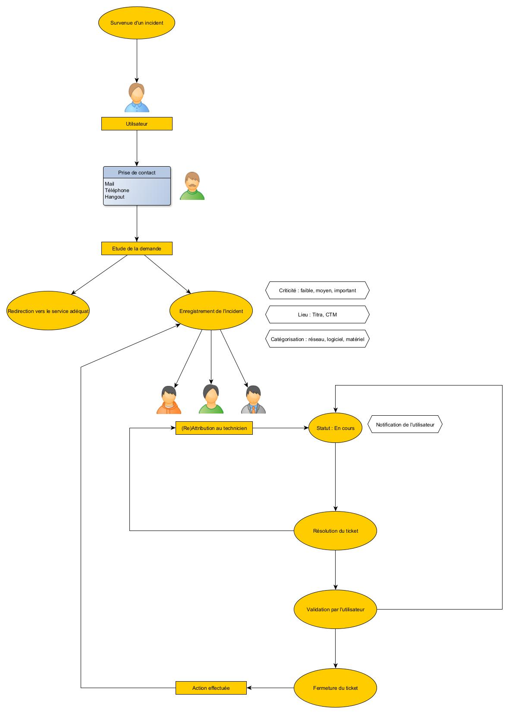
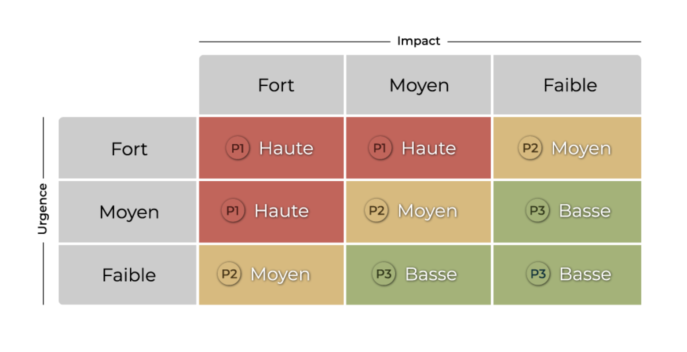

Contexte
Situation professionnelle - Support et gestion des incidents
Dans le cadre de mon poste de technicien systèmes et réseaux, je suis régulièrement amené à établir "un support utilisateur". Cela se traduit par de l'accompagnement lors de la mise en place d'un nouveau service, ainsi que par la résolution de ticket.
- Présentation de l'outil GLPI
-

GLPI est un logiciel open source sous licence dite “libre” et “permissive”. Il est possible d’y exécuter, modifier ou de développer le code, et de contribuer à son amélioration. Il s’agit d’un logiciel de gestion des services informatiques et de gestion des services d’assistance. Il est doté d’une interface Web, permettant de construire notre propre base de données et donne la possibilité de visualiser et gérer son système d’information de manière complète. Dans le cas de l'activité de la société, celui-ci à une double utilité : la gestion des incidents et l'inventaire des actifs informatiques.
Tickets
Gestions consommables
 - Enregistrement de l'incident
-
Quelle modalité de contact ?
Mail
Téléphone
Hangout
Cycle de vie d'un ticket
 - Catégorisation de l'incident
-
Catégorisation de l'incident
Les tickets sont toujours rattachés au lieu, ainsi qu'a l'équipement en question.
Hiérarchisation de l’incident :
Afin d’attribuer le ticket au technicien disposant des compétences adéquates, la criticité du ticket va être évaluée selon l’impacte et l’urgence qu’il engendre.Ce degré de criticité est établi par un employé du SI et est catégorisé selon trois niveaux : FORT, MOYEN, FAIBLE.
Affectation de l'incident
Une fois l’incident catégorisé et évalué selon sa criticité, il sera attribué au technicien disposant des compétences adéquates.
- Résolution et fermeture de l'incident
-
L’utilisateur intervient dans cette étape, c’est lui qui nous indique, bien souvent par retour de mail que l’incident est résolu. Le technicien prend alors le soin de fermer le ticket, en y indiquant toutes les manœuvres effectuées, permettant, en cas de réouverture du ticket d’obtenir l’historique des actions effectués.